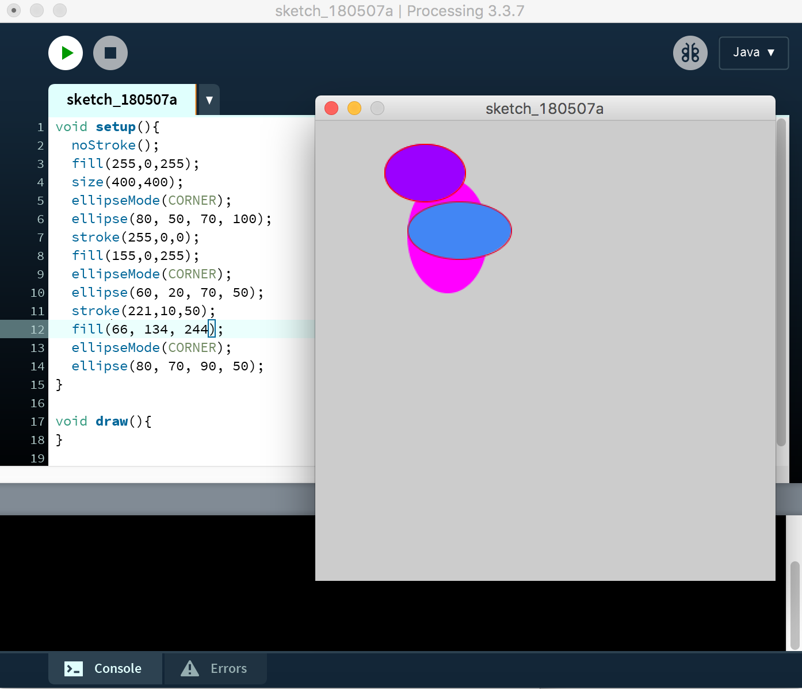
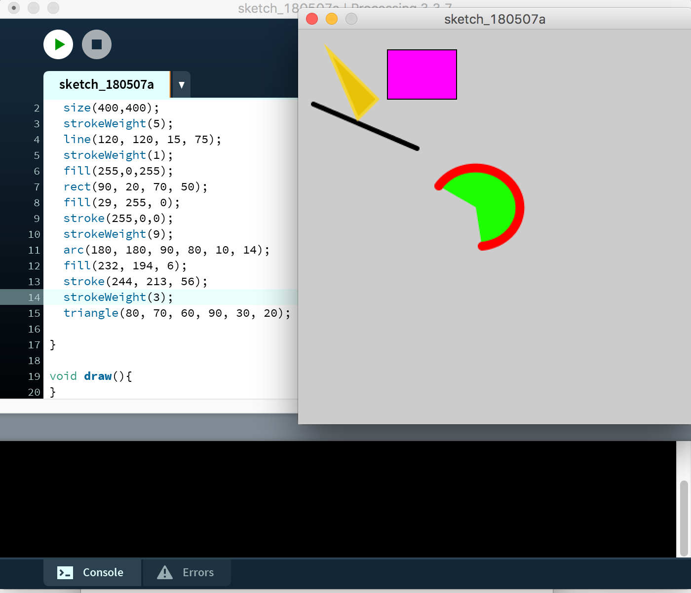
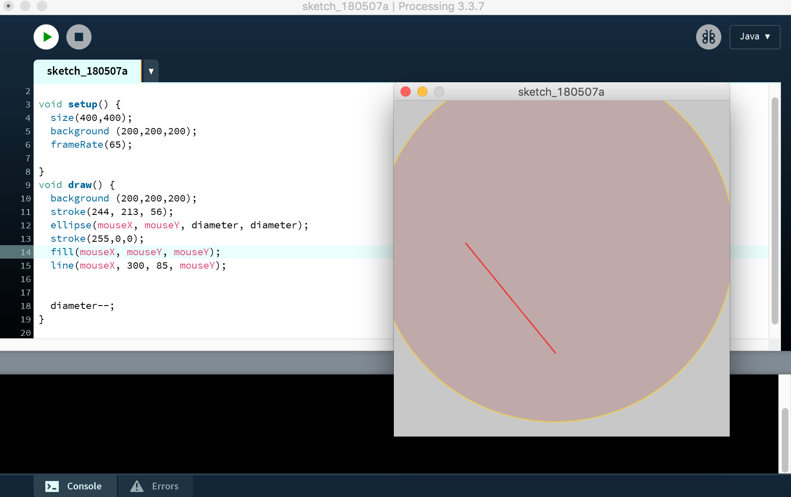
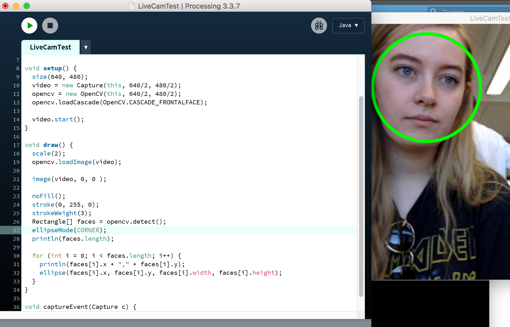
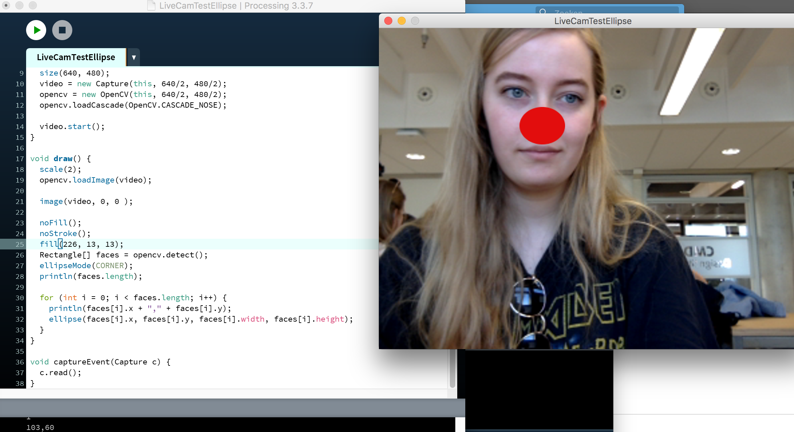
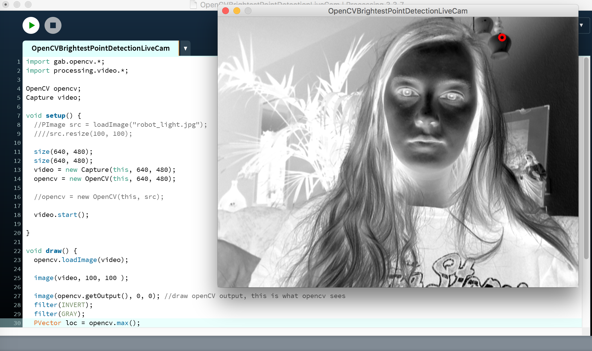

Assignments
Assignment X
Tijdens deze workshop werkten we met processing. Een digitaal schetsboek wat je bestuurt met code. Als eerst moesten we een programma schrijven dat drie of meer ellipsen tekent. Ik geef aan of de ellipsen een rand moeten hebben of niet, dat doe ik met ‘stroke’. Met ‘fill’ bepaal ik de kleur, en met ‘ellipse’ geef ik aan dat het een ellips moet worden en bepaal ik de positie. Vervolgens geef ik het programma de opdracht om het te tekenen.
Assignment X
De tweede opdracht bestaat uit het tekenen van andere vormen dan cirkels. Elke vorm heeft een andere hoeveelheid hoeken, daarom verschillen de waarden ook zo.
Assignment X
De derde opdracht was iets ingewikkelder. Ik moest twee verschillende vormen tekenen die interactief waren. Als ik de muis over de tekening bewoog, veranderde de grootte van de cirkel en de positie van de lijn. Alles wat door de beweging van de muis wordt aangestuurd heeft de waarde ‘mouseX’ of ‘mouseY’. ‘Diameter (--)’ geeft aan dat de diameter van de cirkel steeds kleiner wordt.
Assignment CV1
Nu ga ik aan de slag met de webcam. We kregen een code die zorgde voor gezichtherkening. Eerst werden gezichten aangegeven met een vierkant, maar de code moest zo veranderd worden dat het een cirkel werd. Dat was gelukkig niet zo ingewikkeld, het leek heel erg op het tekenen van vormen in de vorige opdrachten. Alleen moest de rectangle in de code vervangen worden door een ellipse.
Assignment CV2
Nu moest ik ervoor zorgen dat op elke neus die in beeld kwam een clownsneus tevoorschijn kwam. Met ‘cascade_nose’ wordt de neus herkend. Nu hoef ik alleen nog maar een ellipse aan te sturen en hem een rode vulling te geven.
Assignment CV3
De laatste opdracht was vrij voor eigen invulling. Je moest iets leuks doen met de camera. Ik heb een code gedownload die ervoor zorgde dat het donkerste punt in het beeld werd aangegeven en dat alles negatief werd.
